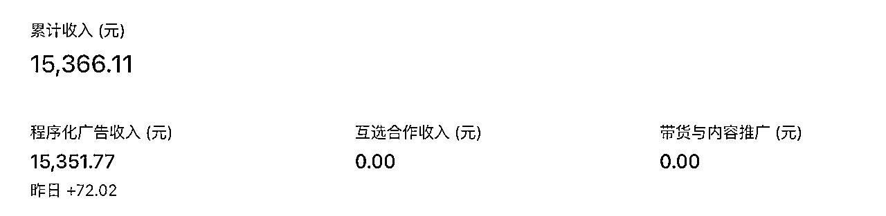
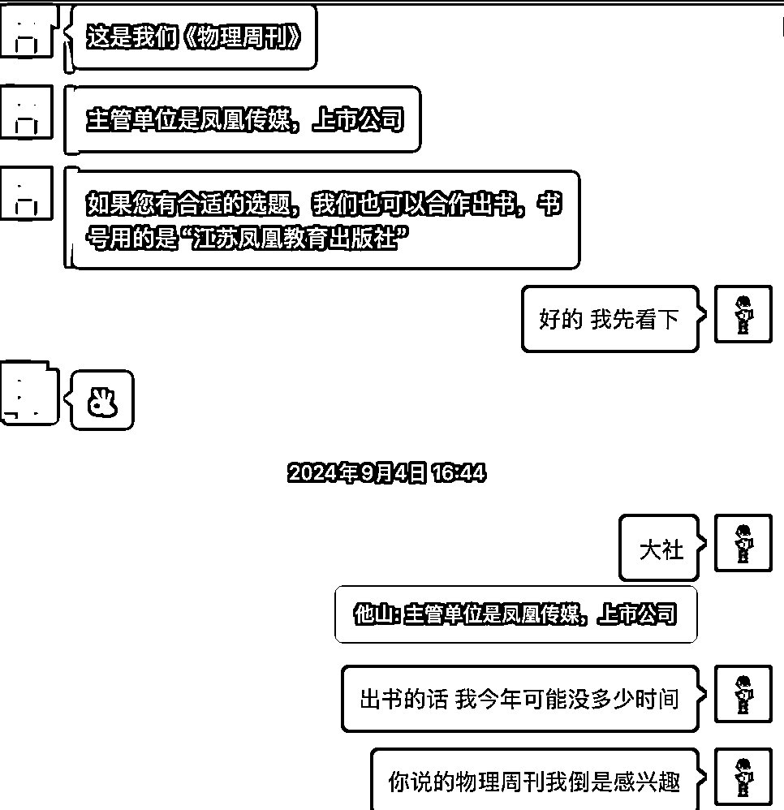

来源：https://hez86518tv.feishu.cn/docx/InStdK39zoSRgZxW5SycviYXnUe
| 版本 | 更新描述 | 作者 | 更新日期 |
|---|---|---|---|
| V1.0 | 新建文档 | 科学羊 | 2025-07-24 |
大家好，我是科学羊🐑，（10W+）爆文公众号专栏日更作者，知名报社签约编辑、海外内容创业实践者、游戏视频创作者、B站游戏UP主。
好久不见❤️，今天我又来生财分享干货啦～
本次分享应@ 七天 老师的邀请以及应@亦仁 大佬前几天关于公众号的超级标，为此给大家分享一下关于我在公众号IP方面的认知与经验。
对了，可能我今天不会具体分享关于公众号基础的内容，基础的内容大家可以在生财航海看到巨量的资料。我本期分享的内容是生财里可能没有的知识，这也是我第一次公开自己在公众号领域的真实心路历程和变现经验。希望大家多多指教～
本期内容你将学到：
1、如何通过公众号搭建自己的IP系统；
2、公众号系统化变现的方法；
3、我自己的方法与经验；
4、公众号IP打造的建议与心得，包括避坑；
为什么是我？
因为我在公众号领域（粉丝10w+）早已做出了自己实打实的个人IP。
以下是我的成绩：
1、公众号深耕8年 - 自然哲学科普作者；
2、公众号流量主总收益 >10W；
3、公众号周边变现（带货、商务合作）> 5W;
虽然和圈内其他大佬变现的收益差距很大，但是从个人IP角度来看，就一个词——稳定。
好，接下来我慢慢给大家分享我自己的心法，其实我和大家一样都普普通通，没有什么特别炫酷的技巧，唯有踏实实践做就一定能出结果。
好，废话不多，我们直接进入主题。
大家先仔细听我讲：
其实很多人，一听公众号，可能第一时间想到的就是流量主，而这类赚钱的方法就是赚快钱，哪里有爆款，哪里有风向，他们就去模仿做，直到这个风口结束，然后就没了。可能随之号也就没了，直到下一个风口在起号。
当然，这也是一种变现方式，但是我所分享的是公众号IP，并不是一个在快速赛道上行走的领域，而是需要花一定的时间去精细打造和雕刻的领域。
那么，什么是公众号IP？
就是深耕你公众号某个号的垂直领域，而且这个垂直要非常垂。
举个例子，比如我是写情感的领域的。其实情感领域还包括：个人成长、女性成长、心理学、关系学...，而且这里面还层层嵌套。而你要做的最好是在一个细化领域深耕。
那我什么时候可以转职呢？
就是在你把这个垂直领域做出一定成绩或者有自己的IP的时候再去慢慢扩张，注意这个扩张也是在大领域下，比如我是做自然哲学科普的。
我当时是花了几年只写物理学领域的知识，后来自己的IP形成后。我又转去做数学领域的科普。但我一定紧紧围绕科学领域，比如AI方面的科学我不写、科技类的新闻或研究我也不写。
所以做个人IP的第一步就是：选定自己的大方向，细化自己的小方向！
给大家一个参考图：
公众号大领域的大分类如上（仅供参考），细分大家可以自行去研究这个分类里面的文章。
参考工具：易撰、次幂数据等。
我是一名自然哲学科普作者，其实在我2017年开始做公众号的时候，生财应该刚刚成立，如果早点踏入生财的这条财富船，说不定我会比现在走的更快，嘿嘿～
另外，我做科普作者源自于自己的兴趣，因为那时候我特别喜欢阅读得到APP老师们的课程，我几乎买了所有的课程（目前已经学习了4890个小时），比如万维钢、李笑来、吴军、梁宁等老师的课程，疯狂学习，疯狂做笔记。
后来我发现自己也很想将自己学到的知识分享出去，也就是能通过笔记的方式把自己学到的内容传播出去。
所以公众号于2017年年初建立后就开始记录自己的学习笔记。这是第一阶段！
不过，如果从运营公众号的角度来看，那时候我的阅读量都是个位数，但是当时我觉得无所谓。反正都是给自己看的。
后来我发现不能自己光分享，还希望能让其他人一起加进来一起学。我也发现自己当时公众号写的内容有点乱，个人成长也写、科学分析也写、计算机算法也写...真的是把得到APP学到的知识给大杂烩了。
直到我加了一个公众号打卡群（号称007终身写作前生）后，我开始注意到自己不能啥都写，一定要给自己定义一个方向，所以我的公众号第二阶段成立了，我选择了深耕写物理学方面的知识。
我记得，那时候打卡的时候，有个群友问我一个非常棘手问题：“你天天写这些物理学的内容有什么用呢？”。我坚持说：“兴趣而已吧”，那时候我没有用户思维，就觉得你爱看不看，反正自己写完爽就行了。
其实她说的也没错，我当时虽然这么想，但是内心也在犹豫，为什么要写这些内容呢，我的目的到底是什么。
因为物理学本来都是我们大多数逃避的一个领域，我还写成文章，给狗估计都不看，哈哈哈。
但是啊，就怕这个但是，我做梦也没想到，几年后我的这些坚持居然让我收获巨大。自己觉得就好比一个扫地僧突然成了武林霸主。
继续...
这个阶段持续了将近1～2年，直到我知道了流量主，我开始了公众号第三阶段，也就是开始慢慢变现了！
你可能不知道，我自己粉丝快到1w的时候都没有开通流量主，我也不知道那时候有没有流量主，这只能说这是个认知问题，同时也说明了我对写作的热爱！
不过第三阶段的变现很低，每天就是几块钱，可能一个月才1百出头吧。不过这个阶段也不是没有改变，这个阶段我开始注意用户思维了。
因为关注我的人越来越多，我总要把文章写好吧，所以我专门去学习粥左罗老师的写作课，强化自己的写作思维和能力。那时候我不光写一篇公众号，而要写个人日课。
后来可能是因为生财的机缘，那时候知道了流量主，我才大吃一惊，开始彻底步入了了公众号的第四阶段。也就是这个阶段，我开始真正重视用户思维，直到我写出了数篇10万加的科普爆文。
而且让我自己更诧异的是，我是能把「数学」+「物理」这样的极端枯燥且非常小众的文章写出10～100万+，在公众号公海根本找不到对标，都是别人来抄我的，所以这个阶段差不多已经成为科普领域的头号了。
你知道我做了什么吗？很简单：标题。你懂了吧！
现在是属于第五阶段，就这样后来发展到成为科普IP，并开设了很多小号，不止做科普，因为懂了公众号爆文写作的方法，所以我只要底层方法对了，起号做其他小IP也是不成问题。
详细大家参考：
所谓真金不怕火炼，只要你的方向是对的，再细分的领域做到极致，就一定有所收获！
好，接下来我们谈谈变现方面的内容⬇️～
前言：大家注意，做公众号，不止是流量主，从公众号个人IP的角度来看，它只是一小部分。
做公众号，一定一定要系统化。
就是你写一篇公众号文章，一定不要只局限这篇文章。
你要思考这篇文章的目的是什么？比如，为了带货、为了粉丝眼球增加流量主收益，还是为了给视频号，甚至你的科普油管账号测试流量？
比如我在做某个公众号的时候画了一张图，如下：
这篇文章最好能像“水”一样流动起来！
哪怕一篇ai文，或者水文，只有经过测试了才知道我适不适合流到后端去变现。
只有系统化变现才稳定，刘润的《商业洞察力》专门讲了系统思维
何为系统化？
用哲学的话说就是：“做这个，其实为了那个，不做，是为了做...”
也就是说，你以为我在看书？不，其实我在积累素材。你以为我只是为了写公众号？不，我是为了测试这篇文章，发了之后能不能获得10万+，然后我把这篇文章拿来去做视频号或者油管视频。
你以为我是为了做油管视频？可能也不对，其实我是打算把它打磨成一篇精文来出书。
这就是我的理念，为什么我如此坚持公众号7～8年，那是因为我早已系统化了。
所以，我坚持让自己的公众号流动起来，这样我可以做的更持久，以及更多的收益。
以下是笔者节选账号总收益

7月份我的流量主收益已经1.5w了！
这里不说太多，流量主是公众号的一部分收益，这也是必要的。流量主其他知识大家请查阅生财手册。
在我看来商务合作是公众号收益的第二大水池，一般来说主要是出书、代写、挂文等。
不过出书等这类基本要等自己的IP稳定下来才行。
这是人民邮电出版社主动找我签约写书的合作，基本就是你和他们谈就好。这种变现就是需要花大量时间，才能有所收益。
出版社一般会一次性给你稿费，然后再根据卖书的数量给你尾款，具体要看出版社的规定。

这是时代学习报【物理周刊】的老师找我写稿签约。
当然，我们的合作不光是口头说说，下面这张图就是实实在在的结果。这次合作我至少拿到1个w+。
一般会有人私信你接不接文，如体育等等都是广告，一般一篇200元起。
我建议大家自行斟酌，这类变现我基本不接。
橱窗是第三大水池，一般会有出版社主动私信你，给你定向分销，一般是20%～30%。甚至还有50%的专属分销。
这是我在橱柜带货后台收到的合作申请
不过以上这类图书的合作，我一般都不接！
因为我觉得虽然接了肯定有钱的，但是这并不是我想赚的钱。因为你做到公众号IP了，最好深耕一个领域的带货。
给大家看一个这样的数据。
上个月带货就赚了1K+，下面的截图只是统计了这本书的带货数据。（带货真的就是睡后收入）
最后，做个简单的总结，主要阐述下关于公众号IP的经验与避坑。
我认为，总结以上的话，靠公众号赚收益，主要包含二个非常大的方向：其一：靠热度和风向来起号的块钱，其二：靠长期内容的堆积与IP打造。
我们本期主要分享是的IP打造，所以大家一定要记住，IP打造注定是一个长期的过程，这个槛是过不去的。
前几天有个朋友也想做公众号IP，来咨询我如何做公众号的问题，正好我也一起分享下这个观点。
一般来说，如果是一个新人要开始打造自己的公众号IP，选对方向后，就应该开始更新。
我的建议是前2周～3周，最好是日更，而且我也不建议开通流量主（有流量再说，或者自然积累就好），因为我们的格局不在这里。不过这段期间要看情况，如果你的文章有推流，就继续日更下去。如果你的文章阅读量非常少，可以考虑1周更3篇（注意一定是方向要对，其他的交给时间就好）。
但这里一定一定要注重自己的标题，标题最好去找5W+以上的爆文标题，而且千万千万千万不要改人家的标题，直接拿来用。一点也不能改，那什么时候能改，等你有一定粉丝再说。
另外，也不要拿了人家的标题后去刷文，这是坚决不行的。
你知道我是怎么做的吗？
第一阶段：抄标题，内容自己的写。也就是它里面的内容都看到不要看，看了反而还会影响你的思维。
比如，XXX3个需要注意的心法，每一个你都不能缺。
你可以自己想这3个究竟是啥，或者借助AI，然后再去用AI写文，自己润色即可！（我在文末有分享详细的SOP，大家链接即可）
第二阶段：仿标题，就是把爆款的标题稍作修改，但是内容大意要一样。这个阶段等你有一定粉丝再说，也就是说这个阶段，你已经差不多入池了。
所以，新人起号需要，就是靠积累，至于积累多久，就要看你的运气了。这是我自己测试出的一条路，而且我测试的几个号都基本最后入池了。如果缺乏毅力，可能很难坚持下去的。因为我得出的结论是：积累到一定程度，公众号会给你打标签，比如，稳定更新、有质量、内容到了一定程度，会自动激发公众号推流。
所以我想告诉大家的是：打造IP之前，佛系更新，只要你方向对了，就以始为终，也就是忘记你昨天写过的文章，每天都是第一天，即使昨天的文章没有流量，把希望放在今天。
另外，还有一个非常重要的一点经验分享：就是起号文章不要做的太好，不要做的太好，不要做的太好。也就是你完全不要去关心什么排版要多么的优质、文笔要多么的优美。
大家注意，卖课的人会告诉你这样是因为他想让你觉得我交付了你很多内容。但是作为有实战经验的我，我不屑一顾。因为这反而是打磨你心力的东西。
为什么这么说，因为你辛辛苦苦打造出来的东西，结果内容和你预期不匹配，你说这样你能坚持多久呢？
要知道，做任何事都分阶段，不是说不要这么做，只是时机未到，我一般都是每天开始有粉丝增长的时候，快要入池的时候才会开始重视这部分内容。
所以前期不要花太多时间，太多精力。起号第一步要做的只是选对方向，积累文章，根据数据结果不断再去优化。
为什么是合刊？有什么好处？
因为你合刊了对于读者来说，他会觉得这是你精选的内容、这是你花尽心思整合的内容。你可能会说，公众号已经有标签做好了合刊，为什么要多余做这一步呢。
不一样的！
真诚这两个字，我认为还是需要付出点什么的。如果你让的用户觉得得到一样东西很容易，那说明其实这样东西没有什么价值。
这也是打造个人IP的关键！
人家说：公众号，小而美～
我想，也确实如此，我不需要靠它赚太多钱，但我只需要它有且不断给我意外的惊喜，就足够啦！
好啦，基本就这些啦，以上都是自己一些浅陋的经历和分享，希望对你有用。也希望生财的各路大佬多多指导～～～
未来，我也会持续将自己在公众号领域做出的成绩分享给大家。
其他关于笔者的公众号文章：
公众号爆文的秘诀究竟是什么？
「干货分享」1天可以跑的60万+的文章是怎么做出来的了？